Solution:
Since the modulus is the distance to the origin the set consists of all those complex numbers which are at a distance between and from the origin. This gives the area shown below.
![[Picture]\special {t4ht^+}](F17ZD_main13x.svg)
Name:
To introduce complex numbers, we’ll take a quick (and somewhat abridged) tour through the history of mathematics. The first numbers that appeared historically (evidence in cave art etc.), and the first numbers that you learned about, are the ‘counting numbers’ or natural numbers. Aside from counting objects,
basic operations can also be performed,
With these operations comes the ability to solve equations: can be solved with . What about trying to solve the following? .
We are now all quite happy with the idea of negative numbers and the solution . However this hasn’t always been the case; negative numbers initially appeared to some to be ‘unnatural’ (what does cookies mean?), and even a recently as the Renaissance in Europe they were still widely mistrusted. But now their use has been recognised. For example, a bank account with a negative balance makes perfect sense!
We now write and solve to get . How about solving the equation
We have a nice formula for solving such equations (courtesy of thousands of years of work dating from the Babylonians, the Indians, the Greeks, the Chinese, the Persians and the Egyptians):
Now let us try to solve the equation
Proceeding as before gives
Up until now, we would stop here and say that the equation has no (real) roots. This is consistent with most of human history. It took many years from initial work by Bombelli (1572 AD) for them to be accepted in the work of Euler (1707-1783) and Gauss (1777-1855).
We first define some notation of complex numbers:
Definition 1.1 Complex Number
We define to be the positive square root of . So . A complex number, , is any expression of the form for real numbers and . For a complex number , we say is the real part and is the imaginary part. This is denoted
The definition allows for . Hence all real numbers are included in the definition of complex numbers.
In Electrical Engineering the notation often used instead of .
Example 1.2
Examples of complex numbers include:
The real and imaginary parts of the above numbers are as follows:
| 3 | ||||||
| 5 | 7 | -4 | 0 | |||
| 2 | -1 | 3 | 0 | 0 |
Notes:
As for real numbers, we can apply some basic arithmetic operations to complex numbers.
Definition 1.3 Equality
Two complex numbers and are equal, denoted if and .
For example: We have and .
Basic operations on complex numbers behave the way we expect as per real numbers
Definition 1.4 Basic operations
Given complex numbers and , we have the following operations:
Addition:
Subtraction:
Multiplication:
We can verify these operations by expanding the brackets and then regrouping by real and imaginary components.
Example 1.5
Take complex multiplication for example:
where we used the identity .
Example 1.6
Addition and subtraction:
Multiplication:
We can also combine operations together using our standard order of operations
You’ll notice that division is not on this list yet. That’s because division is a bit more complicated (as for real numbers)1 . Recall from real numbers, we can convert division into multiplication by using the reciprocal. That is . For complex numbers we will use a similar approach. Given , we will attempt to find a number such that .
Before we get to that, we will introduce a new concept that will be useful
Definition 1.7 Complex conjugate
Given a complex number , the complex conjugate, , is defined to be
In particular, we have and .
Some resources will use to denote complex conjugate
Example 1.8
Note that if is a real number (i.e. ), then . This is why the conjugate does not make an appearance prior to our study of complex numbers.
Equipped with the complex conjugate, we can now rewrite the reciprocal of a complex number.
Example 1.9
Let . We can rewrite by multiplying by 1 in a specific way.
In particular, if , we can express with
The essence of this process is to transfer the imaginary number from the denominator to the numerator. The denominator is derived from the difference of squares and is guaranteed to be a real number. This process is often referred to as realising the denominator.
Further, the denominator tells us that which will be a real number.
Exercise 1.10
Let . Express as a complex number .
Solution:
Using the derivation we had above:
We can also fill in the details as we go.
Exercise 1.11
Express in the form .
Solution:
The complex conjugate of is . Hence, we have
Exercise 1.12
Write in the form .
Solution:
This property is a particularly useful one to remember.
With this in mind, we can now look at complex division
Example 1.14
The algebraic operations for complex numbers satisfy the same properties as the corresponding operations for real numbers. For example
We can extend the definition of to take the square root of any negative number.
Example 1.15
If we have , then , so we have
Exercise 1.16
Solve the equation
Solution:
We isolate by rewriting
With complex numbers, we can revisit our knowledge of solving quadratics using the quadratic formula.
Theorem 1.17 Quadratic formula
Given the quadratic equation , with real constants . The solutions are given by
The quantity under the square root is called the discriminant. In particular:
The first two cases for the discriminant should be familiar. In the case for complex solutions , we have the additional property that . That is the two complex solutions form a complex conjugate pair.
Exercise 1.18
Solve the equation
Solution:
The quadratic formula gives
Thus the solutions are and .
Exercise 1.19
Find the 2 solutions of the equation , and check that .
Solution:
From the quadratic formula
The two solutions are and . We also have .
Operations on complex numbers lend themselves very nicely to visual interpretations. To construct a visual representation of complex numbers, we start with the real number line.
Example 1.20
We can think of real numbers as points along the real number line.
Inequalities in real numbers translates to intervals along the real number line. For example:
The interval translate too
The interval translates to
We can extend this idea to complex numbers. Since two pieces of data is required to describe a complex number (a real part and an imaginary part). We can use those two data as co-ordinates on the plane. The complex number is represented by the point with co-ordinates in the plane. Complex numbers written in is often called Cartesian form for its connection with coordinates in the complex plane.
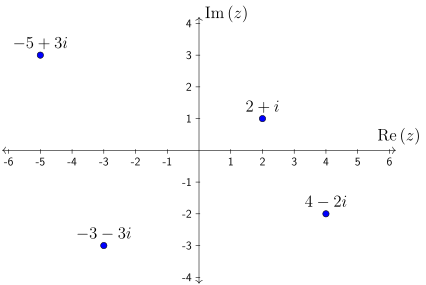
This is known as an Argand Diagram or the complex plane. The Argand diagram provides a simple visual way of representing many of the key properties of complex numbers.
Example 1.21
Let be a complex number. The Argand diagram of , the complex conjugate of , is the point obtained by reflection in the real axis.
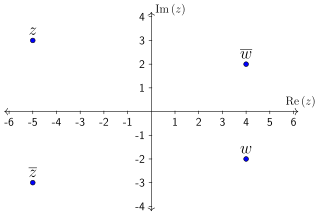
Exercise 1.22
Plot all complex numbers of the form for real numbers
Solution:
The imaginary part of is always 3 while the real part can vary. This leads to the following picture:
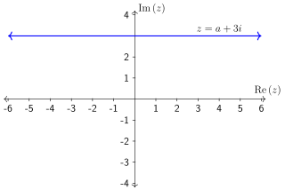
Solution:
Recall that is the equation of a circle with radius . Thus a complex number satisfies if it lies on this circle.
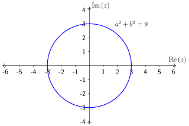
Each point on the circle is a complex number satisfying the requirement.
Solution:
This is a retread of the previous question since is the equation of a circle with radius .
Now that we have a visual representation of complex numbers, we can ask new questions about them. For example, what is the size of a complex number. One way to define size is to take the distance between the number and the origin of the Argand diagram2 .
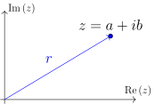
Using Pythagoras’ Theorem we get
Definition 1.25 Modulus
The modulus of the complex number is denoted and is defined by
Exercise 1.26
If calculate .
Solution:
Since with and , we have
Exercise 1.27
Find the modulus of the following complex numbers
Solution:
Applying the theorem, we have
Exercise 1.28
In the Argand diagram, draw the set of all complex numbers with modulus .
Solution:
A complex number has modulus if or (See Section 1.23).
Solution:
(Alternate) We know that the modulus of a complex number gives the distance to the origin. Thus we want all the points at distance from the origin. This again leads to the circle of radius (See Section 1.23).
Solution:
Since the modulus is the distance to the origin the set consists of all those complex numbers which are at a distance between and from the origin. This gives the area shown below.
Notice the difference between the inner and outer boundaries. A solid line indicates that the boundary is included and a dashed line indicates that the boundary is not included3 .
To uniquely define a complex number with the modulus, we would need another piece of information. This second piece of information is called the argument.
Definition 1.30 (Principal) Argument
Let be a complex number. The principal argument of , denoted as , is the angle in radians that makes with the positive real axis in a counter-clockwise direction, chosen so that .
A point in the Argand diagram determines an angle with the positive real axis.
![[Picture]\special {t4ht^+}](F17ZD_main15x.svg)
The choice of such that means:
Example 1.31
The most straightforward method of determining the argument is to draw the diagram.
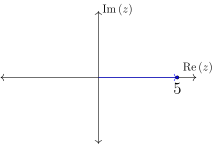
![[Picture]\special {t4ht^+}](F17ZD_main17x.svg)
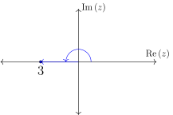
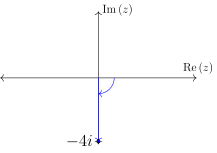
Based on the diagrams, we have:
A similar approach would show that
Example 1.32
We can use our knowledge of coordinate axes to determine:
Further, we can use the special triangles to get
These are all cases we can obtain the angles by drawing and using our experience with simple triangles. We can extend this and develop a more systematic method to use for more general complex numbers
Example 1.33
Suppose is a complex number which determines an angle with the real axis.
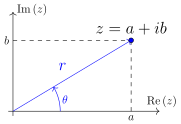
We can use our knowledge of trigonometry to get that
In order words, we can determine the argument from the Cartesian form.
In the case where , we are on the imaginary axis and can resolve the angle using more simple methods.
Exercise 1.34
Find .
Solution:
We start by plotting a diagram
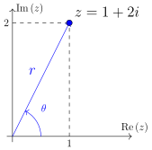
Using the above formula we know that . Using a calculator we get
to 3 decimal places (in radians!).
Even though we have , we have cases where .
Example 1.35
Suppose we want to find using the same method. We will that , which will give . However this is clearly not correct based on our previous exercise. That is and are not in the same direction.
The reason for this is because the inverse tangent function produces values . In other words, the it assumes . If we want to obtain the argument for the complex number in the exact opposite direction, we have to account for it by adding or subtracting
Example 1.36
Consider the numbers and . We know and and . If we plot a diagram, we see why this is the case and how we can resolve it.
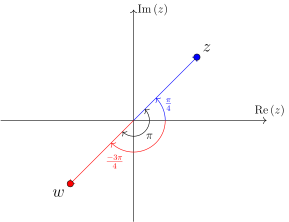
Be sure to have your calculator set to radians mode
Summary 1.37
To find ,
The four quadrants of the complex plane are usually numbered anti-clockwise.
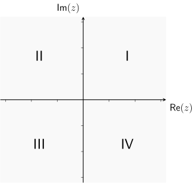
Solution:
Starting with the picture:
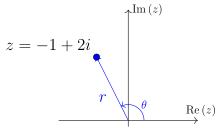
We see that . Using the above formula we know that . Using a calculator we get
to 3 decimal places. Since this is not in the correct range for . Adding gives
Exercise 1.39
Find .
Solution:
We see that , so the inverse tangent value should give us the right argument. This gives:
Now that we have we can determine the modulus and argument of a complex number, we can try to reverse the process.
Definition 1.40 Polar form
Let be a complex number with modulus and principal argument . The polar form of is given by
We can verify this by looking at the picture and applying a bit of trigonometry.
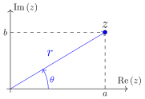
From the picture, we see that the base and height . Hence, we have
Exercise 1.41
Suppose and . Write in polar form.
Solution:
Set and . Then
If we wished to convert it to Cartesian form, we can further simplify
In general, if we want to write a complex number in polar form, we:
We will see in the next subsection that we can also write this as .
Solution:
First we calculate the modulus and principal argument.
Thus the polar form of is
Exercise 1.43
Write in polar form.
Solution:
First we calculate the modulus and principal argument.
Thus the polar form of is
The introduction of complex numbers connects two key areas of mathematics: Trigonometry and the exponential. It is possible to write a Maclaurin series for the exponential
As it turns out, the exponential can be extended to complex numbers in the analogous way.
Definition 1.44 Complex exponential
For a complex number , the complex exponential is defined to be:
It is not at all obvious, but it is a fact that the infinite summation results in something finite for all complex so long as .
If we consider the complex number for an angle , we get:
By resolving the powers of , we get
Recalling the Maclaurin series for and , we see that the two summations give:
This gives a fundamental result in complex numbers
Theorem 1.45 Euler’s Formula
For any angle , we have
In particular, if , we have the famous equation4
Example 1.46
With Euler’s formula, we have
Using Euler’s formula we can get a new and very useful representation for complex numbers in polar form.
Definition 1.47 Exponential form
The exponential form of the complex number with modulus and argument is written as
We derive this form by applying Euler’s Formula to the polar form
To write a complex number in exponential form:
Exercise 1.48
Write in exponential form.
Solution:
Building on Section 1.42, we know and . Hence, the exponential form is
Exercise 1.49
Write and in exponential form.
Now that we have shown how to convert a complex number from Cartesian form to exponential form , we can go in the reverse direction.
Exercise 1.50
Write the complex number in Cartesian form .
Solution:
Using Euler’s formula, we have
Exercise 1.51
Let . Write in the form .
Solution:
We have (to 2 decimal point)
Recall that multiplication and division of complex numbers can be quite an involved process (See Section 1.13). However, we can utilise properties of the exponential function (and hence the exponential form) help simplify this process.
Let and be complex numbers. Then we have:
We can express this as:
Theorem 1.52 Multiplication and division in exponential form
Let and be complex numbers in exponential form
Converting the right-hand side to polar form gives:
Exercise 1.53
Let , and . Find and .
Solution:
Reading off the complex numbers, we get . So we get:
Complex exponentials are extremely useful when dealing with multiplication and division5 . However, its usefulness extends beyond simple arithmetic. For the rest of this section, we will take a (very brief) look into areas where complex exponentials might be useful.
Euler’s formula gives us an alternative way to write the sine and cosine functions which is used very widely in science and engineering. In particular, we have
We can rearrange to get the following:
Theorem 1.54 Trigonometric functions in exponential forms
We can express the trigonometric functions:
Notice that these relations are very similar to the ones for the hyperbolic trigonometric functions (cosh and sinh). The introduction of complex numbers illustrates why they share so many similar identities.
Exercise 1.55
Use complex exponentials to show that .
The complex exponential is also commonly involved in the solution of differential equations, particularly in cases where solutions oscillate (like in AC electronics, quantum mechanics, etc.). It satisfies the same rules of differentiation and integration as any other exponential function6 .
Example 1.56
For derivatives involving , we have
Integration works in a similar way
Exercise 1.57
Verify that is a solution of .
Now that we have seen the exponential in complex numbers, it is natural to question how logarithm behave in complex numbers? The short answer is that logarithms are very complicated beasts, with properties far beyond this introductory course. Use with caution!
Suppose we “naively” apply logarithms on complex numbers using the rules of real numbers, we have the following.
Example 1.58
Let be a complex number in exponential form. We can apply the logarithm as
Exercise 1.59
Let . Find .
Solution:
Since and , we have .
Whilst this approach is not wrong, it also does not capture the entire picture 7.
Through repeated application of Section 1.52, we can extend exponential multiplication to powers of exponentials. We start with
which can be extended to any integer giving
If we convert both sides of the above equation into polar form, we obtain a very important result.
Theorem 1.60 De Moivre’s Theorem
Let be an integer. For an angle , we have
For a complex number in exponential form, the following are equivalent
De Moivre’s Theorem and/or the exponential form are particularly useful when dealing with powers of complex numbers.
Exercise 1.61
Let and compute
Solution:
We first write in polar and exponential form as
Taking the polar form first
Similarly, the exponential form gives
We can reach the same solution by multiplying 8 times. But this would be rather tedious and not recommended.
Exercise 1.62
Compute
Solution:
Putting in exponential form, we find
Thus we have
Exponential form is also useful for computing roots of complex numbers.
Theorem 1.63 Roots of complex numbers
Let be a complex number in exponential form and be a positive integer. There are precisely different -th roots of and they are given by
where is the positive -th root of .
Example 1.64
For square roots of we have . So the two roots are given by
and is the positive square root of .
For cube roots of we have . So the three roots are given by
and is the positive cubed root of .
Exercise 1.65
Let . Find the two values of and verify your answer.
Solution:
Apply Section 1.63 with , and gives
We can verify the solutions by squaring the answer
Exercise 1.66
Find the -th roots of . Confirm your answers by plotting it on the complex plane.
Example 1.67
As a final application of De Moivre’s theorem, we can use it to derive some useful trigonometric identities.
Example 1.68
Consider the case of in De Moivre’s Theorem. We get
In particular, if we equate the real and imaginary parts of the equation, we recover a couple of well-known identities
The theorem gives us two trigonometric identities at the same time.
Exercise 1.69
Prove the identity using De Moivre’s Theorem.
We have seen that for any real angle , Euler’s formula gives
which can be used to write as
This can, in turn be used to write
for complex arguments .
If we expand the RHS using , we find
and
This is also true for with complex arguments , i.e.
with complex arguments .
Example 1.70
Expand for .
Since
The exponential function can be defined for complex arguments
which shows that
The Logarithm can also be defined for complex arguments
which can be written as
You might worry that , (i.e. ), might lead to complications in the definition of for complex arguments - it does! Disentangling these is for another course.
A nice geometrical way to picture complex functions is to think of them as Complex Mappings. A complex function takes the point in the complex plane and maps it to .
Example 1.71
Show the effect of considering as a complex map that acts on the segment , in the complex plane.
If we use polar form, , so it represents a (positive, anticlockwise) rotation by radians.
I have sneakily used an alternative notation in the figures for Re, namely , and Im, namely .
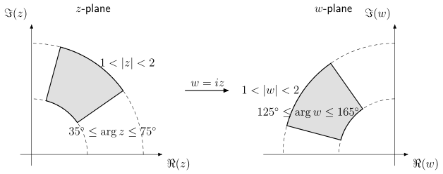
Example 1.72
Show the effect of considering as a complex map that acts on the segment , in the complex plane.
Again, polar form is useful. If , then .
Example 1.73
We can use a complex function to convert a circle (with certain properties) to an aerofoil shape. Each dot on the left plot (the values) is connected to one on the right (the values) by the formula
The highlighted circles and diamonds show where their values end up on the value plot. Note that the circle in the plane is slightly off-centre.
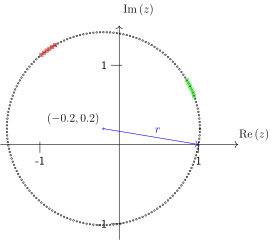
![[Picture]\special {t4ht^+}](F17ZD_main48x.svg)
in this example is a complex function. The argument is a complex number and the function returns a complex number .
Let us pick apart in Cartesian form.
We can see that the complex function may be written using two real-valued functions of
where
This is true in general.
Example 1.74
Let the initial circle now be centred on the origin with radius , i.e. with . What is ?
Parametrize it by
Then
Writing , we have
Eliminating gives
Hence the image of the circle under is an ellipse centered at the origin, with semiaxes
In the special case , the ellipse degenerates to the line segment.
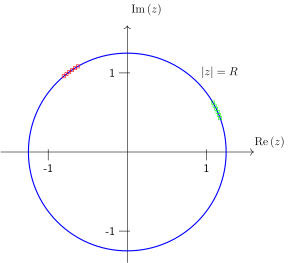
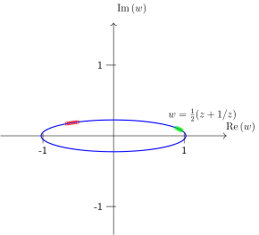
Exercise 1.75
Consider the quadratic map, where (with real) is a complex constant.
What is when written in terms of real functions . i.e. ?
Solution:
Substitute into and gather the real and imaginary parts:
One of the most striking uses of complex numbers is in complex dynamics, where we repeatedly apply a map
starting from some initial value . The resulting sequence is called the orbit of . Even very simple choices of can produce complicated behaviour: orbits may converge to a fixed point, fall into a periodic cycle, or escape to infinity.
We have just encountered the quadratic map
where is a complex parameter. A useful practical fact is the escape radius: if at some step (when ), then the orbit will diverge to infinity (so we do not need to keep iterating).
Example 1.76
If we consider a few iterates in the complex plane: Take and start at . The first few iterates are
and then the orbit returns close to and again.
Example 1.77
Julia sets (bounded starting points): Fix . The filled Julia set is the set of starting values whose orbits under stay bounded. (The Julia set is the boundary of .) The picture below is a coarse “escape-time” plot for : points that do not escape after a fixed number of iterations (200) are drawn as yellow dots.
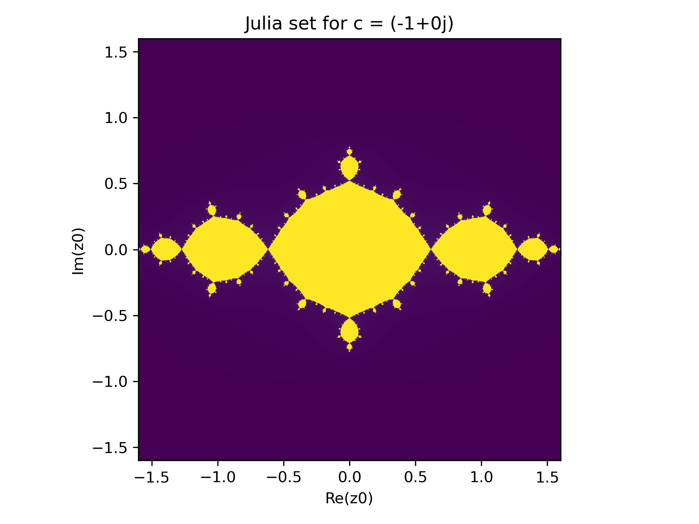
Example 1.78
The Mandelbrot set (bounded parameters):
Instead of fixing and varying , we can fix the starting point and vary the parameter . The Mandelbrot set is the set of parameters for which the orbit of under remains bounded. The plot below is again an escape-time picture (very low resolution), now in the -plane.
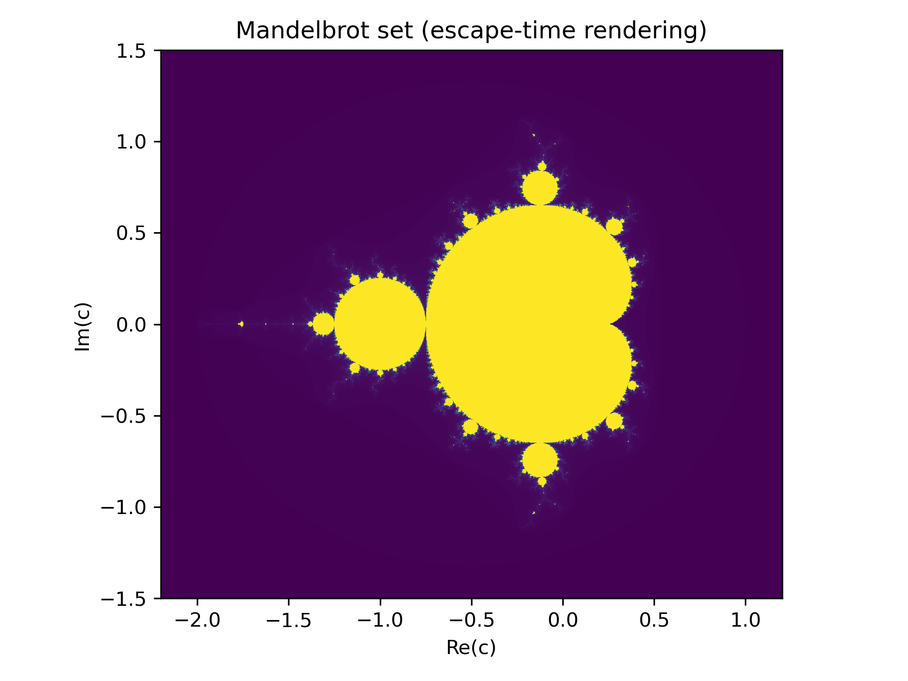
Complex numbers extend the real numbers by adjoining a new unit with . Quaternions extend the complex numbers further by adjoining three imaginary units.
Quaternions were introduced by the Irish mathematician William Rowan Hamilton in 1843 as a way to extend complex numbers to describe rotations in three dimensions. After years of trying (and failing) to build a consistent “three–dimensional complex arithmetic”, Hamilton realised that the key was to move to four components and to accept that multiplication need not commute. On 16th October 1843, while walking in Dublin, he famously carved the fundamental relations
into the stone of Brougham Bridge.

Quaternions quickly attracted attention in 19th-century mathematical physics and geometry, but they were later overshadowed in many applications by the vector calculus of Gibbs and Heaviside. In the late 20th century they saw a major revival in engineering and computing—especially in robotics, aerospace, and computer graphics—because unit quaternions provide a numerically stable and efficient way to represent 3D rotations without the singularities that can occur with Euler angles, which appear when using vectors.
Definition 2.1 Quaternion
A quaternion is an expression of the form
where and the symbols satisfy
The set of all quaternions is denoted .
From the defining relations one can derive the multiplication rules
Quaternion multiplication is not commutative. For example,
Definition 2.2 Scalar and vector parts
Write a quaternion as
We call the scalar part of and the vector part.
Addition and subtraction are componentwise (exactly as for complex numbers):
Multiplication is defined using distributivity together with the table above.
Example 2.3
Compute .
If we swap the factors,
so the order matters.
Quaternions have an analogue of complex conjugation.
Definition 2.4 Quaternion conjugate
For , the conjugate is
Definition 2.5 Norm
The norm of is defined by
Example 2.6
Let . Then
Just like complex numbers, the norm is useful for division.
Theorem 2.7 Inverse of a nonzero quaternion
If , then has a multiplicative inverse
Example 2.8
Find the inverse of .
Because multiplication is not commutative, one must distinguish between left and right division in more advanced settings. In this course we will only divide by placing the inverse on the right: .
A key application of quaternions is the description of rotations in .
Definition 2.9 Pure imaginary quaternion
A quaternion with zero scalar part,
is called pure imaginary. We identify it with the vector .
Definition 2.10 Unit quaternion
A quaternion with is called a unit quaternion.
Any rotation by angle about a unit axis can be encoded by the unit quaternion
Given a vector (viewed as a pure imaginary quaternion), the rotated vector is
Example 2.11
Rotate by about the –axis.
The axis is and , so
Let (since corresponds to ). Then
Thus rotates to , as expected.
Exercise 2.12
Use the multiplication table to compute and . What do you notice?
Solution:
From the table, and . They differ by a minus sign, illustrating non-commutativity.
Exercise 2.13
Let . Compute , , and .
Solution:
We have and
Hence
Exercise 2.14
Let and . Write down the unit quaternion describing rotation by about the –axis, and compute .
Solution:
Here and . Then
So the –axis is sent to , as expected for a rotation about the –axis.
We briefly recall some facts about vectors in . Intuitively, a vector of can be thought as an arrow encoding a length and a direction. A vector however does not have an origin, so one may draw many arrows in the plane corresponding to the same vector:
One may identify the set of all vectors in with the set of points of the plane , by associating to each point of the plane the vector from the origin to that point. Under this identification, the origin corresponds to a vector called the null vector and denoted .
Definition 3.1
Each point and thus each vector can be denoted by a pair of real numbers (thus the notation ): the horizontal displacement and the vertical displacement. Such a vector is denoted by the matrix
It is a very useful convention to write vectors vertically, i.e. as matrices. For typesetting reasons however, we often write that vector as , i.e. as a matrix instead.
We have the following rules for adding two vectors and and for multiplying a vector by a number (called a scalar):
With our convention, the null vector is the vector with coordinates . Note that if we multiply a vector by , we obtain the null vector: for all .
Definition 3.2
Most of the notions introduced on straightforwardly extend to . A point in the Euclidean dimensions encodes a vector , i.e. an arrow from the origin to that point. We describe the vector by a matrix
or sometimes as a matrix for typesetting reasons.
We can add vectors and multiply them by scalars as before:
The generalisation to should now be clear.
Definition 3.3
We define:
An element of is called a vector (of ), and is identified with an matrix.
Definition 3.4
For vectors and a scalar , we define the following operations on vectors:
From a given family of vectors, one can construct new vectors using additions and multiplication scalars.
Definition 3.5
Let . A linear combination of is a vector of the form
Example 3.6
The vector is a linear combination of and , since
Exercise 3.7
Let
Solution:
Also
The first gives while the second gives , which is impossible. Hence there is no with .
Writing a vector as a linear combination of other vectors can be thought of as ‘decomposing’ that vector. Given a family of vectors of , we will study the following questions:
The standard basis of . There is already a standard family of vectors for which these questions have a simple answer.
Definition 3.8
We introduce the following vectors of :
This family of vectors is generally called the standard basis of .
Theorem 3.9
Every vector of can be written in a unique way as a linear combination of , namely:
Example 3.10
The vector can be written as a linear combination of the standard basis vectors for , since
Note that it is also possible to use a non-standard basis to describe the vectors, as in the following example.
Example 3.11
The vector from the previous example can also be written as a linear combination of the non-standard basis vectors for , where
since
Exercise 3.12
Can I use along with and as basis for ?
Consider a system of linear equations whose associated matrix is an matrix of the form:
For a vector of , we define :
In other words, for , the -th component of is
Consider the following system of linear equations:
Let be the matrix associated to this system, and let A vector is solution of that system if and only we have:
Solving that system is thus equivalent to the following problem:
Is a linear combination of ?
Thus, a matrix is not ‘just a bunch of numbers’, but we can use it to associate to a vector a new vector . In other words, we can associate to any matrix a map from to .
Given a family of vectors of , we start by considering the questions: What vectors of can be obtained as a linear combination of ? We first introduce some definition:
Definition 3.13
The span of a family of vectors of is the set span of vectors of that can be written as a linear combination of . In other words,
Checking whether a given vector is a linear combination of a family of vectors is checked by solving a system of linear equations. Here is an example:
Example 3.14
Let us determine whether the vector is a linear combination of and . We have to solve the equation
with variables . Using coordinates, we express this as a system of linear equations, and perform Gaussian elimination:
From this echelon form, we see that the system has exactly one solution (all variables are pivot variables and no inconsistent line). We solve the resulting system by substitution, which yields and . Thus,
Exercise 3.15 Linear combination test in
Determine whether the vector is a linear combination of and . If it is, find scalars such that
Solution:
We must solve
In coordinates this becomes the linear system
which is inconsistent.
Equivalently, we row-reduce the augmented matrix:
The last row represents , which is impossible. Hence the system has no solution, so is not a linear combination of and .
Since checking whether a given vector is a linear combination of vectors is checked by solving a system of linear equations, it follows that there is either no way to write as a linear combination (precisely when is not in the span of ), exactly one way or infinitely many ways.
Theorem 3.16
Let be a family of vectors of and consider . We have the following:
More generally, any linear combination of vectors of is again in .
Definition 3.17
A subset of containing the null vector and stable under linear combinations is called a subspace of .
The algebraic properties of spans of vectors mentioned above have a geometric counterpart: Spans of vectors, seen as subsets of , have a very simple shape: line or plane through the origin in for instance. More complicated shapes, such as spheres, hyperboloids, etc. can never be spans.
As an illustration, we now list the various possibilities for the span of two vectors of . In particular, we see that such spans are geometrically very simple.
Theorem 3.18
The span of two vectors of is either:
Proof. Consider two arbitrary vectors . If , the span of and is just . If they are collinear and for instance is non-vanishing, then the span of and is the straight line parallel to going through the origin.
If they are not collinear, then we now show that and span . Let be an arbitrary vector of . We want to write as a linear combination of and . In other words, we want to find numbers such that . By taking coordinates, this yields the following equations:
Here, the variables are and , and the coefficients are constants. We thus have a system of linear equations. We perform the following row operations:
Since and are not collinear, we have , so we can find solutions and in terms of the other constants. Thus, there is a solution to our system of equations, so is a linear combination of and . □
Definition 3.19
We say that a family of vectors of spans (or is a spanning family of , or that is spanned by ), if , that is, if every vector of can be written as a linear combination of .
Theorem 3.20
Let be a spanning family of . Then . In other words, a spanning family of contains at least vectors.
Proof. Given a vector of , we have to consider the equation
where are variables. Taking coordinates gives us a system of equations (one for each coordinate of ) with variables. We can now perform Gaussian elimination to get a system in echelon form. We will now show that each row contains a pivot, which will be enough to conclude that : Since each pivot must be strictly to the right of the pivots of the previous rows, this means that there must be at least as many columns as rows in the associated matrix, hence .
If there was a row without a pivot, then the last row of the augmented matrix the echelon form would be of the form
where is a non-trivial linear combination of . Note that if , then we have a forbidden row, and the system has no solution. We can now choose specific values of such that . This corresponds to an equation of the form
which also has no solution. Thus, the vector is not a linear combination of , hence these vectors do not form a spanning family. □
We now study family of vectors for which there is a unique way to write a given in the span as a linear combination of .
Definition 3.21
A family of vectors of is linearly dependent if one of the vectors is a linear combination of the other vectors. Equivalently, a family of vectors is linearly dependent if there exist scalars not all zero such that
A family of vectors is linearly independent if for every , we have
A family of vectors is linearly independent if and only if there is a unique way to write any vector of the span as a linear combination of .
Determining whether vectors are linearly independent amounts to solving a system of linear equations, which we do using Gaussian elimination.
Theorem 3.22
To determine whether vectors are linearly independent, one uses Gaussian elimination to find all solutions to the system
If all variables are pivot variables, this homogeneous system of linear equations has only the trivial solution . In this case, are linearly independent. Otherwise, nontrivial solutions exist and the vectors are linearly dependent.
Let us consider some examples:
Example 3.23
We want to determine whether the vectors , , and are linearly independent. We need to study the equation
with variables . Taking coordinates, this leads to the system of linear equations:
We use Gaussian elimination to solve this system. We get
Thus, all the variables are pivot variables and the system is consistent as it is homogeneous, so the system has exactly one solution. Since the system has at least one solution, namely , this must be the only solution. As a consequence, the vectors , , and are linearly independent.
Exercise 3.24 Linearly dependent vectors
Determine whether the vectors , and are linearly dependent.
Solution:
We must find all solutions of the homogeneous system:
We reduce the associated system using Gaussian elimination:
Not all the variables are pivot variables ( is a free variable) and therefore the system has infinitely many solutions, which implies that the vectors are linearly dependent. More precisely, if we rewrite it as a system of linear equations, we get
For instance, by setting we obtain
We now study families of vectors such that every vector of can be written in a unique way as a linear combination of . We have already seen one example of such a family, namely the standard basis of :
This family of vectors is generally referred to as the standard basis of . This notion can be generalised as follows:
Definition 3.25
A basis of is a family of vectors such that every vector of can be written in a unique way as a linear combination of . In other words, a family of vectors is a basis if and only if it is both spanning (existence of a linear combination) and linearly independent (uniqueness of a linear combination).
Theorem 3.26 A
basis of contains exactly vectors. □
Theorem 3.27
Let be a family of exactly vectors of . The following are equivalent:
Note that . Let us show that . We want to show that is linearly independent. To that end, we try to solve the homogeneous system of equations by Gaussian elimination. Since we have equations with variables, either every variable is a pivot variable, or there exists a free variable. In the latter case, we can find a vector of such that reducing the system of equations would give a bottom row of the form
This would imply that the system associated to the equation is inconsistent, contradicting the fact that the family spans . Thus, every variable is a pivot variable, and we know the system has exactly one solution: .
Let us now show that , using a similar strategy. We want to show that spans . To that end, we try to solve the system of equations , for some vector of , by Gaussian elimination. Since we have equations with variables, either every variable is a pivot variable, or there exists a free variable. In the latter case, the system of equations would have infinitely many solutions, contradicting the fact that the family is linearly independent. Thus, every variable is a pivot variable, which implies that the system of equations admits at least one solution.
The implication gives us a possible method to show that a given set of vectors forms a basis of . However, there is often a faster way to show that a given family of vectors forms a basis of :
Theorem 3.28
Let be a family of vectors of , and let
be the associated matrix. Then:
This works because the determinant is calculating a volume (or area in dimensions) defined by the vectors.
In the determinant gives the area of the parallelogram defined by . If is collinear with the area is zero.
In , on the other hand, three vectors generically define a parallelepiped, as shown below. If one of the vectors is linearly dependent on the other two in will be coplanar with them and the parallelepiped will collapse to have zero volume. It is harder to picture in higher dimensions, but the idea is the same.
Example 3.29
Using a determinant to test for a basis of :
Let
Form the associated matrix with these vectors as columns:
Compute its determinant (expand along the first row, for example):
Hence
Therefore, by the theorem,
We can also use the determinant test when the vectors do not form a basis:
Example 3.30
Using a determinant to test for a basis of (an example where the vectors don’t form a basis).
Let
(Notice that .)
Form the associated matrix with these vectors as columns:
Compute its determinant (expand along the first row, for example):
Hence
Therefore, by the theorem,
(In fact they are linearly dependent since .)
In the previous chapter, we introduced the space of vectors. The key operations for vectors in are adding two vectors and multiplying a vector by a scalar. In this section, we will develop the general abstract framework allowing us to treat various examples of vector spaces in a uniform way.
To be able to treat various cases with a single mathematical framework, we now introduce the notion of an abstract vector space. This is the notion that makes rigorous this idea of ‘spaces of objects where one can add vectors and multiply them by a scalar’.
Definition 4.1
A real vector space is a set (whose elements are called vectors) endowed with two operations:
We further require that the following vector space axioms are satisfied:
This list of axioms (1)-(7) may seem long and technical. However, you should convince yourself that they encode the usual properties that one expects from addition and multiplication by a number for vectors, functions, etc. Moreover, the strength of this abstract framework is that, once we know that something is a vector space, we can treat objects of that space (functions, sequences, or more exotic objects) as if they were vectors, and use our geometric intuition to solve problems.
The space is a vector space for the addition and multiplication by a scalar defined above. Here, a vector is a sequence
the zero vector is the zero sequence
and the opposite of a vector is given by
Here again, one then checks that axioms (3)-(7) hold, by checking each equation pointwise.
Complex vector spaces. We have just defined real vector spaces, that is, vector spaces where the set of scalars is . These will be the almost sole focus of this course. However, one can analogously define complex vectors spaces by setting the set of scalars to be and having the same list of axioms. Examples of complex vectors spaces are:
We now generalise to abstract vector spaces the notions we introduced in .
Definition 4.2
A vector is called a linear combination of the vectors , if it can be written as
This is an extension of our definition of linear combination of vectors in .
Example 4.3
Consider the vector space of polynomials of degree at most 2. Linear combinations of the two functions (=vectors) defined and are polynomial functions of the form
For instance, the polynomial function defined is a linear combination of and , since we have .
Definition 4.4
The span of a family of vectors , usually denoted by , is the set of all possible linear combinations of :
We also say that is spanned by or that these vectors span .
Example 4.5
Definition 4.6
We say that vectors are linearly independent if
Otherwise, we say that the vectors are linearly dependent. This is an extension of our definition of linear independence for .
As in the case of , linear dependence as a simple interpretation: a family of vectors is linearly dependent, if and only if one (i.e. at least one) of the s can be expressed as a linear combination of the others.
Example 4.7
Let us show that the functions are linearly independent vectors of .
Let be scalars such that is the zero vector of , that is, the zero function. This is equivalent to:
By evaluating at , we get , hence for every . By evaluating this equation at , we get , hence . Finally, we have for every , and evaluating at yields .
We thus have , and it follows that are linearly independent.
Definition 4.8
A family of vectors is called a basis of , if it is a linearly independent set of vectors that span .
Example 4.9
We have already seen the standard basis , , of .
Note that a real vector space has infinitely many bases. For instance, and is also a basis of Why?.
Here is an important example:
Theorem 4.10
A basis for the vector space of polynomials of degree at most is .
Proof. The family clearly spans , as every polynomial function of can be written as a linear combination for some scalars . Let us show that this family is free. Suppose that we have a linear combination that is the zero vector, that is, for every . By evaluating at , we get . Now since the polynomial function is the zero function, so its derivative, so we get for every . Evaluating again at , we get . By repeating the same procedure (differentiating and evaluating at ), we prove successively that . Thus, the family of polynomial functions is linearly independent, so it is a basis of . □
In order to define the dimension of a vector space, we need the following important result:
Theorem 4.11
Any two bases for a vector space contain the same number of vectors.
Before proving it, we need the following result:
Theorem 4.12
If a family of vectors is a basis of a vector space , then every family of vectors of containing more than vectors is linearly dependent.
Proof. Let be a family of vectors of . We will show that there exist not all zero such that
| (4.1) |
Since spans , each can be expressed as a linear combination of the ’s:
Plugging this into (4.1), we have
To have all the coefficients of the vanish, note that it is sufficient to find such that
This is a homogeneous system of linear equations with more unknowns () than equations () and thus there is a solution with not all of the being zero. It follows that (4.1) has a solution besides the trivial solution and so is linearly dependent. □
Proof of Proposition 4.4. Let and be bases for . From the above lemma, we conclude that since is a basis and is linearly independent, . Equally, since is a basis and is linearly independent, . Altogether, we have . □
We are now able to define properly the dimension of a vector space:
Theorem 4.13
Let be a vector space. We say that is finite-dimensional if it has a finite basis, and infinite-dimensional otherwise. We define the dimension of to be the number of vectors in any basis of .
Example 4.14
We have constructed bases of several vector spaces. We have the following dimensions:
The following result is useful in finding a lower bound for the dimension of a vector space:
Theorem 4.15
Let be a vector space, and let be a linearly independent family. Then we have:
The previous examples are the main sources of vectors spaces for this course. However, we are often not interested in the space of all vectors, or of all functions. Instead, we are often interested in particular subsets of elements that satisfy some equation: system of linear equations, differential equations, etc.
In this section, we introduce the notion of vector subspace as the natural notion of subset of a vector space that is compatible with the operations of addition and multiplication by a scalar. We will see that the set of solutions of various equations naturally form a vector subspace of the associated vector space.
Definition 4.16
Let be a vector space and let be a subset of . We say that is a vector subspace (or simply a subspace) of if the following holds:
A vector subspace of is itself a vector space, when endowed with the addition and scalar multiplication coming from . (This is actually an equivalence: a subset is a subspace if and only if it is a vector space when endowed with the addition and scalar multiplication from .)
As a consequence, we can talk of the dimension or of bases of a given subspace.
Example 4.17
Consider the subset of . That is, consists of all the vectors of the form for . The null vector is clearly in . If we add two vectors or multiply a vector by a scalar in , we end up back in :
Thus, us a subspace of . Note that every vector of is of the form
so has dimension and a basis of is given by the vector
Remark. If a subspace contains a vector , it also contains its opposite , as is stable under multiplication by a scalar and .
Example 4.18
Example 4.19
Let . Then is a vector subspace, since vectors of are of the form
and we have:
Thus, is a subspace of of dimension , and a basis of it is given by the vector .
In general, lines through the origin of
form vector subspaces of .
Subspaces of . We have seen already that we can completely describe the subspaces of :
There is a similar picture in , where subspaces can be lines through the origin, planes through the origin, etc. Geometrically, being stable under addition and scalar multiplication makes vector subspaces ‘look flat’.
Solutions of systems of linear differential equations as subspaces. We saw in a previous example how the set of solutions of certain differential equations may be described as a span, and hence is a subspace of . Even without an explicit description of the solutions, it is possible to show that the set of solutions forms a subspace.
Consider the following differential equation (linearised simple pendulum):
Then the set of solutions of this equation is a subspace of .
Proof. Let and . Then:
We conclude that is a vector subspace of . □
Dimension of subspaces. Since a subspace of vector space is itself a vector space, it also has a dimension. It is natural to wonder whether the dimension behaves well with respect to subspaces: For instance, is the dimension of a subspace at most the dimension of the original vector space? While this intuitively obvious, it requires a proof. And indeed, things go extremely well:
Theorem 4.20
This result can provide a simple way to show the equality between two subspaces: Instead of showing both inclusions, it is only necessary to show one inclusion and the equality of dimensions, something that is generally easier to handle. We will see applications in the next chapter.
The previous theorem relies on the following results:
Let be an -dimensional vector space and let be a linearly independent family of vectors. Then can be extended to a basis of . □
Suppose that a family of vectors spans a (finite-dimensional) vector space . Then there exists a subfamily that is a basis for . □
In F17ZB we looked at solving , now we are going to look in more detail at solving the homogeneous system of equations
This leads on naturally to a discussion of rank for matrices (we have already seen one definition of this in F17ZB).
Theorem 5.1
The set of solutions of a homogeneous system of linear equations in unknowns is a vector subspace of whose dimension is the number of free variables, after reducing the system to its echelon form.
Proof. Let be the set of solutions. By definition, we have for some matrix . In particular, the null vector belongs to . Let and . We have:
Thus, is a vector subspace of . We solve the system using Gaussian elimination. As usual, we can express solutions in terms of the free variables of the system. In particular, we write the general solution as a linear combination of the form for some vectors of . In particular, we see that the family spans the subspace of solutions. To show that this family is also free, notice that if a free variable corresponds to the variable , then the -th component of the vector is exactly . In particular, if , then all the components must be zero, and it follows that . □
Remark. Note that with is not a vector subspace. Indeed, this subset does not contain the null vector as . This is analogous to lines in not running through the origin.
To find a basis of the space of solutions of a homogeneous system of linear equations, we can apply the following algorithm:
Example 5.2
Consider the following system of linear equations:
We would like to determine a basis of the subspace of solutions. We first perform Gaussian elimination to reduce the system:
There are two free variables, and , and the general solution is thus of the form
Any solution can be rewritten as
and we find that is a basis of the solution space of the system.
The span of a family of vectors. Another important type of subspace is given by spans of families of vectors. The following generalises a result we have seen in :
Theorem 5.3
Let be a vector space and let be vectors of . Then is a vector subspace of .
Proof. The span contains the null vector since . Let be vectors in , and let . Then we have
Thus, is a subspace of . □
Example 5.4
Remark. A vector subspace can sometimes be spanned by many different sets of vectors: for instance, both the pairs of vectors and span . Indeed, given a vector , we have
Definition 5.5
The rank of a family of vectors is the dimension of the subspace they span.
For this type of subspaces, there is also a simple way to determine their dimension and find a basis. However, the proof of this result requires tools that will be introduced in the next chapter, so we postpone its proof for now.
Finding the dimension and a basis of the span of a family of vectors of . We can find a basis for as follows:
Example 5.6
We wish to find a basis for the subspace of spanned by
We apply the previous algorithm (place the vectors as columns and row-reduce):
There are two pivot columns (columns and ), so the rank of this family of vectors is and the vectors span a two-dimensional subspace of (a plane through the origin). Hence a basis for the span is given by
Moreover, since the third column is non-pivot, is a linear combination of and ; indeed the row-reduction shows .
Since finding a span is a useful skill, let’s consider a further example ☺
Example 5.7
Definition 6.1
Given an matrix written in column form as
the image of , denoted Im, is the subspace of spanned by . Its dimension is called the rank of and denoted or rank.
Example 6.2
Consider the following matrix:
The column space of is and a basis of it (obtained by Gaussian elimination) is .
In this example, we see that
Theorem 6.3
The inhomogeneous system of linear equations is consistent if and only if is in the column space of .
Proof.
Theorem 6.4
Elementary row operations do not change the row rank of a matrix.
Determining the row rank and a basis of the row space. We can determine a basis of the row space as follows:
Example 6.5
Consider the following matrix:
After performing Gaussian elimination, we find the following row echelon form:
As the row vectors in the echelon form are linearly independent, we have that a basis of the row space of is , and in particular .
Now consider determining the column rank and a basis of the column space. We can determine the column space of a matrix and its column rank as follows:
Example 6.6
Let us consider the same matrix as in the previous example. We bring its transpose to row echelon form:
Thus, is a basis for the column space of and the column rank is .
Again, we saw in the previous two examples that . This is a consequence of the following general result:
Theorem 6.7
For an matrix , we have
This quantity, simply denoted , is called the rank of the matrix .
Proof. Let be a basis of the row space: . We then have:
The column space is thus spanned by . It follows that . Interchanging rows and columns in this argument leads to , and altogether, we have . □
Example 6.8
Let us reinterpret some old results in term of the rank. There is nothing new in this paragraph (and you should convince yourself of it):
Theorem 6.9
Let be an matrix, Then:
Theorem 6.10
Let be an matrix. Then the system of linear equations is consistent for all if and only if .
Proof. The statement that is consistent for all is equivalent to the fact that the image of is and thus that the (column) rank of is maximal: . □
Theorem 6.11
Let be an -matrix. We have:
Definition 6.12
Let be an matrix. The kernel (also called the nullspace) of is the subspace of consisting of the solutions of the system of linear equations
Its dimension is called the nullity of .
Theorem 6.13
Let be an matrix. Then we have:
Proof. Performing Gaussian elimination, we obtain a matrix with exactly pivots. In particular, of the variables are pivot variables, while the other are free variables. But we know from previous results that the rank of a matrix is the number of pivot variables in any row echelon form, while the nullity of a matrix is the number of free variables in any row echelon form. □
We have already seen a rather different looking definition of the rank of a matrix in F17ZB.
Definition 6.14 Rank of a matrix
The rank of a matrix of size is the smallest such that there exist vectors and with
Matrix is said to be if full rank of . Since
the rank of and are the same.
Let’s take the same example used there and see how Gaussian Elimination gives the same value for the rank.
Example 6.15
In F17ZB we considered the matrix
and stated that this was a rank-2 matrix (not obvious at all from just looking at it!) since
Example 6.16
To determine the column rank of
We row-reduce (row operations do not change linear relations among the columns):
There are exactly two nonzero rows in echelon form, hence
The pivot columns are columns and , so a basis for the column space is given by the corresponding original columns:
Moreover, the remaining columns are dependent:
so all columns lie in the span of .
Example 6.17
Let
From row-reduction we know that and that the pivot columns are the first two columns. Set
Moreover, the remaining columns are linear combinations of :
Therefore, if we record these coefficients column-by-column, we obtain the coefficient matrix
Then factors as
Equivalently, writing in terms of its rows
we obtain a decomposition of as a sum of two outer products (a sum of rank– matrices):
Since this is a sum of two rank– matrices, it also makes it transparent that (and in fact because are independent).
The decomposition
is highly non-unique in general.
However, if you fix the left vectors to be a specific basis of the column space (e.g., the first two columns), then the corresponding right vectors are unique (given that choice).
Exercise 6.18
Consider the matrix
Solution:
(a) Row operations to find independent columns. Row-reduce to echelon form:
The leading (pivot) entries occur in columns and . Therefore the corresponding original columns of form a basis for the column space:
Hence the column rank is the number of pivot columns:
(b) Outer-product / rank factorisation. Let the columns of be . From the matrix we have
so every column of lies in .
Define
Then the columns of are
so . Writing by rows,
we obtain the outer-product decomposition
This expresses as a sum of two rank– matrices, so . Since and are not multiples of each other, they are independent, so . Therefore,
A simple model to study a population of animals is the following: the population is divided into two age groups: adults and juveniles. At the start of the observation, the population consists of adults and juveniles. From one year to the next, the adults will each produce on average juveniles. Adults will survive from one year to the next with probability , while juveniles will survive into the next year and become adults with the probability .
We wish to understand the evolution of the population over time: does the population collapse, does it converge to a stable state? And how does this behaviour depend on the fertility rate ? Notice that we have the following equations between the population in two consecutive years:
This can be rewritten as
In particular, we see by induction that
To understand the population at a given time, we thus need to compute powers of the matrix . This is a priori a non-trivial problem. There is however one case where computing powers poses no problem: the case of diagonal matrices.
A natural strategy would be to try to find a ‘simplest possible basis’ where the matrix becomes diagonal, compute the powers of the matrix in that basis, and go back to the original basis. If we restate this problem in terms of matrices, we want to find an invertible matrix and a diagonal matrix such that . We have:
Since is very easy to compute, it follows that computing itself becomes much easier to compute, provided we know how to compute . This leads to the following questions:
The goal of this chapter is to answer these questions and see applications to various problems.
Definition 7.1
Let be an -dimensional vector space and let be a linear map. Then is called a (real) eigenvalue of , if there is a vector , , such that
The vector is called an eigenvector of for the eigenvalue .
Recall that an matrix can be seen as a linear map . In particular, the notions of eigenvalues and eigenvectors are well defined for matrices: is an eigenvalue of , if there is a vector , , such that , and the vector is called an eigenvector of for the eigenvalue .
Example 7.2
Example 7.3
Consider the following diagonal matrix:
Then the eigenvalues of are . Indeed, for a vector , we have . If is an eigenvector of for an eigenvalue , then we also have . As one of the is non-zero (since ), it follows that for some .
Note that if the are pairwise distinct, then the eigenvectors associated to are of the form , respectively, where .
Definition 7.4
A linear map is called diagonalisable if there exists a basis of eigenvectors.
Equivalently, is diagonalisable if there exists a basis of such that the associated matrix is of the form:
Example 7.5
The orthogonal projection is diagonalisable as the matrix of in the basis is
The map
is diagonalisable. Indeed, in the basis , we have
By seeing an matrix as a linear map , we are led to the following definition:
Definition 7.6
An matrix is diagonalisable (over ) if there exists a basis of made of eigenvectors of .
Equivalently, is diagonalisable if there exists an invertible matrix such that is of the form:
Remark. The two definitions of diagonalisability for maps and matrices are compatible: a linear map is diagonalisable if and only if the associated matrix is diagonalisable for some (hence every) basis .
Distinct eigenvalues and linear independence. Here is an useful criterion:
Theorem 7.7
An matrix has at most eigenvalues.
This theorem is a direct consequence of the following result, together with the fact that a linearly independent family in an -dimensional vector space contains at most vectors.
Theorem 7.8
Proof. Assume that we have constants such that . Let us denote this equation . By applying on both sides of the equation, we get . Let us denote this equation . Now by considering , we get the equation . We are thus back to an other linear combination of fewer eigenvectors, and we can now prove the result by induction. □
Here is a useful corollary:
Theorem 7.9
Remark. The previous result is not an equivalence, there exist diagonalisable maps that have fewer than eigenvalues. For instance, the identity map is diagonalisable, but its only eigenvalue is .
Definition 7.10
Given an eigenvalue , the associated eigenspace is the following subset:
Theorem 7.11
An eigenspace is a subspace of .
Proof. By definition, we have that , and we know that kernels of linear maps are vector subspaces. □
The proof of the following result is a slight variation on the proof of Proposition 7.3.0.0:
Theorem 7.12
Let be distinct eigenvalues of a linear map . Let be bases of the eigenspaces respectively. Then is a linearly independent family of vectors.
Theorem 7.13
Let be a linear map and let be the distinct eigenvalues of . Then is diagonalisable if and only if:
The next natural question to answer is: how do we find the eigenvalues of a given linear map or matrix?
Finding an eigenvalue and an associated eigenvector amounts to finding solutions to the equation , or equivalently . Up to choosing coordinates, we can assume that is represented by an matrix . The problem thus amounts to solving a linear system of equations , or equivalently This is a homogeneous system of equations in unknowns. It has a non-trivial solution if and only if is not invertible, and this is equivalent to . This motivates the following definition:
Definition 7.14
Given an -matrix , the expression
is a polynomial of degree in , called the characteristic polynomial of the matrix .
Remark.
In this course, we will mostly compute characteristic polynomials for
and
matrices. When computing characteristic polynomials in general, one compute this determinant using the
expansion technique.
The definition of the characteristic polynomial is motivated by the following result:
Proof. We have:
Example 7.16
Let us find the eigenvalues of the matrix
The characteristic polynomial of reads as (rule of Sarrus)
or . We see that is a root of this polynomial and factorise it as . That is, the eigenvalues of are and .
The characteristic polynomial seen as a polynomial over . By the fundamental theorem of algebra, the characteristic polynomial of an matrix can be factorised into linear factors:
where are (not necessarily distinct) complex. These are called the complex eigenvalues of , and the eigenvalues we defined so far are the complex eigenvalues that are real. Since a polynomial of degree has at most roots, we recover the fact that has at most complex eigenvalues, hence at most real eigenvalues.
Remark. A matrix may have no real eigenvalues, e.g.
has a characteristic polynomial
without real roots. However, since a polynomial of degree
always has at least one root by the fundamental theorem of algebra,
always
has at least one complex eigenvalue.
There is one simple case where the eigenvalues can be read directly from a matrix:
Theorem 7.17 L
et
be an upper-triangular matrix. Then the eigenvalues of are
The same result holds for lower-triangular matrices.
Proof. , and the result follows from Theorem 7.5.0.0. □
When computing the row echelon form of a matrix via Gaussian elimination, the diagonal entries in the echelon form are not the eigenvalues of in general.
Definition 7.18
The trace of a square matrix , denoted tr, is the sum of its diagonal coefficients.
We have the following properties:
In particular, we get that for every invertible matrix , tr tr tr. Similarly, we have In other words, the trace and the determinant remain the same when changing basis. If is diagonalisable, then these quantities can be computed in terms of the eigenvalues of in an appropriate basis. This leads to the following useful result.
Theorem 7.19 L
et be a diagonalisable matrix, and let be its eigenvalues counted with multiplicity, i.e. the roots of counted with multiplicity. Then we have
This result is useful to check your computations, as the trace in particular is very easy to compute. Try to always use this consistency check!
Example 7.20
Let us go back to the matrix
whose eigenvalues we computed previously: In particular, we get that the sum of the eigenvalues is , which does indeed coincide with tr. Similarly, the product of the eigenvalues is , which we recover from Sarrus’ rule. We can thus be reasonably confident that we did not make mistakes in computing the eigenvalues of .
Definition 7.21
Let and let be an eigenvalue of .
Example 7.22
Let us consider again the matrix
We have , so the eigenvalues of are and , and their algebraic multiplicity are and respectively.
Let us compute the dimension of the corresponding eigenspaces using Gaussian elimination. For the eigenvalue , we obtain the system:
We use Gaussian elimination:
The row echelon form has exactly one free variable, so the dimension of the corresponding eigenspace is , so the geometric dimension of the eigenvalue is .
For the eigenvalue , we get the system of equations
All of these equations are multiples of , so the system boils down to the equation . This system has exactly two free variables ( and ), and so the dimension of the corresponding eigenspace is . In other words, the geometric multiplicity of the eigenvalue is .
In particular, we see in this particular example that geometric and algebraic multiplicity coincide.
Example 7.23
Consider the following matrix:
Since is upper-triangular, we have Thus, is the unique eigenvalue of and its algebraic multiplicity is .
We find the geometric multiplicity by solving the system which yields the system:
This system is already in row echelon form and has exactly one free variable. So the geometric multiplicity of is .
In this particular example, the algebraic and geometric multiplicity differ.
For every eigenvalue of , the geometric multiplicity is less than or equal to the algebraic multiplicity.
Theorem 7.24
An matrix is diagonalisable (over ) if and only if:
Example 7.25
Here are examples of matrices which are not diagonalisable:
We have , so the matrix has no real eigenvalue (but two complex eigenvalues: and ), and therefore cannot be diagonalised as a real matrix.
We have , so the only eigenvalue of the matrix is (note that is upper triangular), which has algebraic multiplicity , but the associated eigenspace has dimension , so in particular the algebraic and geometric multiplicity do not coincide. Thus, is not diagonalisable over .
Example 7.26
Let us continue the study of the matrix We already know that , so the eigenvalues of are and , and we showed in previous examples that the algebraic and geometric multiplicity coincide for each eigenvalue. By the previous theorem, is diagonalisable.
We have the following method to determine whether a given matrix is diagonalisable (over ):
In the previous theorem, it is enough to check that algebraic and geometric multiplicity coincide for eigenvalues of algebraic multiplicity at least , as the algebraic and geometric multiplicity necessarily coincide for eigenvalues of algebraic multiplicity
Example 7.27
Let us finish the study of the matrix We already know that , so the eigenvalues of are and , and we showed in previous examples that the algebraic and geometric multiplicity coincide for each eigenvalue. By the previous theorem, is diagonalisable.
Let us compute a basis of eigenvectors. For the eigenvalue , we solve the system:
We use Gaussian elimination:
By substitution, the solutions of this homogeneous system are , so a basis for is .
For the eigenvalue , we get the system of equations
By substitution, we find that the solution to this system of linear equations is of the form for . Thus, a basis of is given by . Finally, a basis of eigenvectors is
Seeing as a linear map , let us perform a change of basis. Let
be the matrix of change of basis from the standard basis to our basis of eigenvectors. In particular, the matrix of in the basis of eigenvectors is:
Definition 7.28
The dynamical system associated to an matrix and a choice of initial condition is the sequence of vectors of defined by:
In particular, we get by induction that:
Theorem 7.29
Let be a diagonalisable matrix with a chosen basis of eigenvectors and corresponding eigenvalues . Let be the dynamical system associated to a given initial condition . Let such that
Then we have for every ,
To determine the asymptotic behaviour (convergence, divergence, possible limit) of a dynamical system associated to a diagonalisable matrix :
Using Gaussian elimination, find constants such that
We then have
This formula can be used to determine the asymptotic behaviour of the dynamical system.
Let us go back to the problem of understanding the dynamics of some animal population. We have:
For simplicity and concreteness, assume that , . The characteristic polynomial of is:
The eigenvalues of are and . In particular, has two distinct eigenvalues , hence it is diagonalisable by Theorem 7.3.0.0. We can thus find a basis of eigenvectors for . If we write the initial vector in this basis as:
we get
We thus see that the dynamics of this population depend on the eigenvalues, and hence on the fecundity rate :
Finally, if and , that is, if , then
In particular, the population converges to a stable population where the number of adults and juveniles satisfy:
This mathematical model to understand the evolution of a population by dividing it into several age groups is known as the Leslie model.
Application: The Fibonacci sequence. Consider the sequence satisfying the following recurrence relation:
and with the initial values and . The numbers are known as the Fibonacci numbers: . Let us introduce the following vector of :
The recurrence relation gets encoded into the following matrix equation:
with
To compute from given and , we just have to apply to the initial vector. The characteristic polynomial is
and its eigenvalues are and . In particular, the matrix has two distinct eigenvalues, hence it is diagonalisable by Theorem 7.3.0.0. We compute the corresponding eigenvectors and . One then writes the initial vector in this basis of eigenvectors by solving the system of linear equations
for some , using Gaussian elimination. One finds:
If we apply to our initial vector, we obtain
and by taking the second component of , one gets
Sequences satisfying a linear recurrence relation. More generally, for a sequence satisfying a linear recurrence relation of the form
for some constants , we can compute using the same procedure. First introduce the following vector of :
And notice that we have
with
One then compute the characteristic polynomial . One can show that
One can then compute the eigenvalues and eigenvectors. If turns out to be diagonalisable, with a basis of eigenvectors and associated eigenvalues respectively, one then express the initial vector in the basis by solving the associated system of linear equations. If
then it follows that
and one finally obtains by taking the first component of .
Diagonalisability over and dynamical systems. In this course, we have mostly been dealing with real vector spaces and diagonalisability over . When it comes to diagonalisability however, using complex numbers instead can be very useful: A matrix may be diagonalisable over (in which case the previous methods apply) even though the same matrix is not diagonalisable over .
Here is a concrete example. Consider a sequence satisfying the following linear recurrence relation:
By applying the previous method, we end up studying a dynamical system associated to a matrix whose characteristic polynomial is . This polynomial does not admit any real root, so the associated matrix is not diagonalisable over . However, over , the characteristic polynomial has two roots, and One can show that the associated matrix is diagonalisable over , and as a result, there exists constants such that for every , we have
We can then compute the values of using the initial conditions For instance, for and , we find , and finally
Diagonalising a matrix helps to compute its powers. Assume that we have diagonalised an matrix : , where is a diagonal matrix with entries . We then have
Here, is simply the diagonal matrix with entries .
We have the following algorithm to compute the powers of a diagonalisable matrix :
Example 7.30
Let
Let us compute .
We compute the characteristic polynomial ,
and so the eigenvalues of
are
and . In
particular,
is a matrix
with two distinct eigenvalues so it is diagonalisable. Using Gaussian elimination, we find that a basis of
is the vector
and a
basis of is
the vector .
We thus define the matrix of change of basis
whose inverse we compute by Gaussian elimination:
We thus have
and it follows that
In the previous chapter, we introduced new tools to study (linear) dynamical systems such as dynamics of animal population. In such a model, animals die and are born, and the total number of animals can vary (and as we have seen, the asymptotic behaviour is closely related to the eigenavlues of the associated matrix.)
In this chapter, we focus on a class of dynamical systems where the total number of ‘elements’ under study stays the same, modelling instead a phenomenon of redistribution. As we will see in the following motivating problem, many such dynamical systems reach some equilibrium, and the goal of this chapter will be to understand why.
A company is planning to introduce to-rent bikes in Edinburgh. The plan is to have various spots scattered in four main zones: Old Town (zone 1), Haymarket (zone 2), Fountainbridge (zone 3), and Newington (zone 4). During a trial period, the company monitored the displacements of bikes to understand the behaviour of their possible customers. They noticed the following:
A natural question (in order to decide the amount of parking slots needed) is to decide whether there exists a stable distribution of bikes, that is, so that the number of bikes parked at the beginning of every day remains constant over time. If we denote by the vector whose components encode the distribution of bikes in zone 1, , 4 respectively, this amounts to solving the following equation:
This computation was done in Tutorial 1, and we found that the unique solution to this system was the vector .
However, the company might just have decided to start with an equal distribution of bicycles at each location. In that situation, one can study the evolution over time of the distribution of bicycles. Indeed, if we denote by the vector whose components encode the average distribution of bicycles in zones to after days, then
We find:
In particular, we see that, over time, the distribution seems to converge (rather quickly) to the stable distribution we computed before. There are thus two natural questions to ask oneself:
The goal of this final chapter will be to answer in the affirmative these two questions, and to see further applications.
The dynamical systems we wish to encode correspond to the evolution over time of a set of ‘elements’ (bikes, people, animals, etc.) that can be in a certain number of ‘states’. At every time, each element can either stay in the same state or change to a different state with a given probability. The only condition is that this process is without memory, that is, the probability from moving to a state to a state depends only on the states , and not of the states the process was at at previous times. Such processes, heavily studied in probability theory and statistics, are called finite Markov chains.
Example 8.1
We give here some examples to illustrate the type of processes we are trying to model:
Example 8.2
Here is an example of a process that cannot be modelled in this way. We play a game by flipping a fair coin as follows: We start with pounds. Every time we get heads we win pound, and every time we get tails we lose pound. However, being reasonable, we decide to stop playing if we lose three times in a row. One way we could try to model this game is by taking the set of elements to consist of a single player, and the three states can be: ‘win’, ‘lose’, and ‘stop playing’, and we go from one state to the other depending on the outcome of the coin flips. This process however does not fit the previous description. Indeed, knowing that we just lost pound (i.e. we are currently on the ‘lose’ state), we cannot tell the probability to move to the other states without knowledge of the prior events: if we had already lost twice before, then we will stop playing and move to state ‘stop playing’ with probability . Otherwise, we will keep playing and move to state ‘win’ or ‘lose’ with probability .
Now that we have some intuition about the type of processes we are trying to model, we will present an algebraic framework to study them. The key thing is to encode the various probabilities of moving from one state to another in a workable way. This is done as follows, using a Markov diagram.
Definition 8.3
Markov diagram is a finite labelled oriented graph:
for each vertex , we have:
Intuitively, a Markov diagram encodes (in a diagrammatic way) the types of processes we are interested: the vertices correspond to the states of our process, and an oriented edge with label from the vertex to the vertex corresponds to a probability of moving from state to state . We only indicate non-zero probabilities in the diagram, hence the requirement that . Moreover, the second condition simply means that the diagram encodes all the possible transitions from one state to the other: if we are at a state at a given time, with probability () we will move to one of the other states indicated in the diagram by following an oriented edge starting at .
Example 8.4
Let us consider again the example of the coin flip, and the coin is assumed to be fair: heads and tails happen with probability . The Markov diagram for this process is the following:
If instead we considered an unfair coin giving a head with a probability of , then the Markov diagram would be:
Another way to encode a this data is by means of a matrix, called a transition matrix, which is particularly useful to understand the evolution over time of the process.
Definition 8.5
The transition matrix associated to a Markov diagram with states is the matrix defined by:
Example 8.6
The transition matrix associated to the fair flip coin above is:
while the transition matrix associated to the unfair flip coin above is:
The introductory example involving bikes can be modelled using a Markov diagram with four states corresponding to the four zones respectively. The associated transition matrix is:
Note that a transition matrix is a particular example of a stochastic matrix, as defined below:
Definition 8.7
An matrix is called a stochastic matrix if the following holds:
The transition matrix can be used to model the evolution over time of the distribution of a given number of elements taking at each time one of the possible states. Suppose that we start originally with elements in the state , elements in the state , etc. We encode this by a vector , whose coordinates record the initial distribution of objects under study. At each iteration of the process, each object moves from one state to another with following the probabilities encoded in the Markov diagram (or equivalently, in the transition matrix). At a given time, we have the following:
Theorem 8.8
Let be the vector whose coordinates record the initial distribution of elements in states . Let us denote by the vector whose components record the expected distribution after iterations of the process of elements in states respectively. We have for every :
In particular, we get by induction:
Definition 8.9
A vector such that is called a stationary distribution. In other words, it is an eigenvector of for the eigenvalue .
A stationary distribution represents the distribution over the possible states when the system is at equilibrium, i.e. does not change over time.
Example 8.10
In the Markov chain modelling the distribution of bikes mentioned in the introduction, the vector is a stationary distribution.
Definition 8.11
Let be an matrix.
The transition matrix associated to a Markov diagram is non-negative, but not necessarily positive as there may be a probability of going from some state to some other state .
The integer in the definition above depends on the matrix. In particular, for every it is possible to construct a regular matrix such that is positive but are not positive.
Theorem 8.12
The transition matrix associated to a Markov diagram is regular if and only if there exists an integer such that one can go from any vertex of its Markov diagram to any other by a sequence of exactly oriented edges.
Proof. The term of is given by:
Since all the coefficients are non-negative, is positive if and only if for every , there exists such that are all non-zero. Since a directed edge in the Markov diagram corresponds to a positive probability to move from one state to the other, this is equivalent to saying that for every , there exists a sequence of directed edges from the state to the state . □
Example 8.13
The following matrix is a regular stochastic matrix:
Indeed, it is clearly stochastic. Moreover, since is positive, it is also regular.
Example 8.14
The following matrix is a regular stochastic matrix:
Indeed, the fact that is stochastic is clear, and we have:
which is positive. The corresponding Markov diagram is the following (where for simplicity we omit the probabilities, and we represent arrows from to and from to simply by a double arrow):
and we see that it is indeed possible to find a directed path of length between any pair of states.
The key theorem of this chapter is the following:
Theorem 8.15
Perron-Frobenius Theorem for stochastic matrices Let be a regular stochastic matrix. Then the following holds:
There exists stationary distributions for . In other words, is an eigenvalue of .
Moreover, there exists a stationary distribution all of whose components are strictly positive.
The proof of the Perron-Frobenius is rather long and technical (you can find the proof on the internet, or come and ask me after class/tutorials.). I will just present the proofs of two of the fours results, that illustrate nicely some of the concepts we have encountered in the course so far.
For any square matrix, we have
A square matrix and its transpose have the same eigenvalues.
Proof. Indeed, since for any square matrix, it follows that
In particular,
□
Proof. (i) Notice that, since is stochastic, the entries in each column of add up to . This can be reformulated as follows:
In particular, we see that is an eigenvalue of . But and have the same eigenvalues by the above theorem. Since is an eigenvalue of , it is also an eigenvalue of .
(ii) Let us prove this statement in the case where is diagonalisable. We choose a basis of eigenvectors for the eigenvalues respectively. Let and let us write , for some . We then have for :
Since by (iv), it follows that converges to . To conclude that the limit is an eigenvector (for the eigenvalue ), it remains to show that . (an eigenvector cannot be the null vector.) But since is stochastic, the sum of the components of remains the same at every stage. Since we started from a vector such that , it follows that the sum of the components of is non-zero, and in particular . □
Let us go back to the problem stated in the introduction. The problem of modelling the changes in the distribution of bicycles can be modelled using a Markov diagram, whose transition matrix was given in the introduction. This associated transition matrix is regular, as it is positive. Let us denote by the vector corresponding to the initial distribution of bikes. After days, the expected distribution of bikes is given by . By (iv), this sequence of vectors converges towards a stationary distribution . This stationary distribution is a vector whose components add up to , since each vector satisfies the same property (intuitively, the bikes are just redistributed, there is no gain nor loss of bike in the process). By (ii), since the eigenspace is a line (i.e. has dimension ), there is a unique vector of whose components add up to , and this is exactly our stationary distribution . Note that this characterisation of does not depend on the original distribution . This explains in hindsight why the stationary distribution is unique, and does not depend on the original vector .
One natural question would be to understand the speed of convergence. When the transition matrix is diagonalisable, then there exists a basis of for the associated eigenvalues . In particular, if we write our initial vector as a linear combination of the , as , we have for :
In particular, we see that and that converges to zero exponentially, and as fast as (up to a multiplicative constant), where
Rephrased using Landau’s notations, we have:
If is not diagonalisable, a slightly weaker inequality holds, namely:
for every We will not prove this stronger statement in this course.
One can imagine the internet as a (very large) oriented graph. Vertices correspond to pages and oriented edges correspond to links from a page to another.
To this oriented graph, we can associate a finite Markov chain whose states correspond to the pages, by assuming that a person on a given webpage will click with equal probability on one of the links of the page. To construct the associated transition matrix, we denote by the number of links from page to page , and by the total number of links on page , then the probability that someone on page clicks on a link leading to page is:
Let us consider a small example of a very small network consisting of four webpages . The table representing the links between pages is given below, where the coefficient in row and column represents the number of links from page to page :
| 0 | 0 | 2 | 2 | |
| 2 | 0 | 2 | 1 | |
| 1 | 1 | 0 | 2 | |
| 1 | 1 | 1 | 0 |
The transition matrix associated to this Markov chain is:
However, this model fails to take into account that quite often people will go to a webpage not because it was linked from a previous page, but because they started thinking of something completely different, independently of the content of the current page. This can be modelled by another Markov process where at each time, the probability of going from any page to any other page is exactly , where is the number of pages (in our example, ). This finite Markov chain has a transition matrix a matrix of the form
What Google does to take both processes into consideration is to consider that what is going on is a combination of the previous cases. There exists a constant , called damping factor, such that with probability , a person will choose the next page by clicking on one of the links, and with probability that person will choose the next page completely at random. A standard value for is . This corresponds to a Markov process whose transition matrix is given by the following barycenter of and :
Note that this transition matrix is now strictly positive, and in particular regular. We can thus apply the Perron-Frobenius Theorem, which tells us that there exists a stationary distribution with positive components and with sum , called the ranking vector. By the convergence property, this corresponds to the expected distribution of people on pages when this process has been repeated infinitely many times. Pages with a comparatively high distribution correspond to ‘popular’ pages, and are thus ranked highly by Google. This ranking vector is (a simplified version of) what Google uses to rank pages.
Definition 8.16
A ranking vector used in the Google PageRank algorithm is a stationary distribution of the ‘Google matrix’ with positive components. (Such a vector is unique up to multiplication by a positive constant, by the Perron-Frobenius Theorem)
The ranking of the webpages is obtained by ranking the components of that vector.
Let us go back to our simple example. Taking the damping factor to be , the new transition matrix for the process is
Finding the stationary distribution corresponds to solving the system , which we do as usual using Gaussian elimination, with a computer as the computations are too cumbersome. The unique stationary distribution whose components are positive and add up to is (with approximations to the second digit)
So the ranking of these pages, from most popular to least popular, is: page , page , page , page .
Speed of convergence (extra-curricular). We know from the Perron-Frobenius Theorem that a way to obtain a ranking vector is to look at the asymptotic behaviour of for an arbitrary vector with . We wish to find an upper bound on the norm . However,instead of looking at this norm, we will be looking at a slightly different one that is easier to use in this situation:
Note that we still have the triangle identity . Moreover, for every vector , we have:
Theorem 8.17 F
or every and every positive vector whose components add up to , we have:
Proof. We have:
In particular, for non-negative vectors , we get
and
By induction, we get
and thus, for every positive vector whose components add up to , we get:
□
Note in particular that this speed of convergence is independent on the size of the matrix. For instance, for , then the power method gives an approximation of the ranking vector with error less than after iterations.